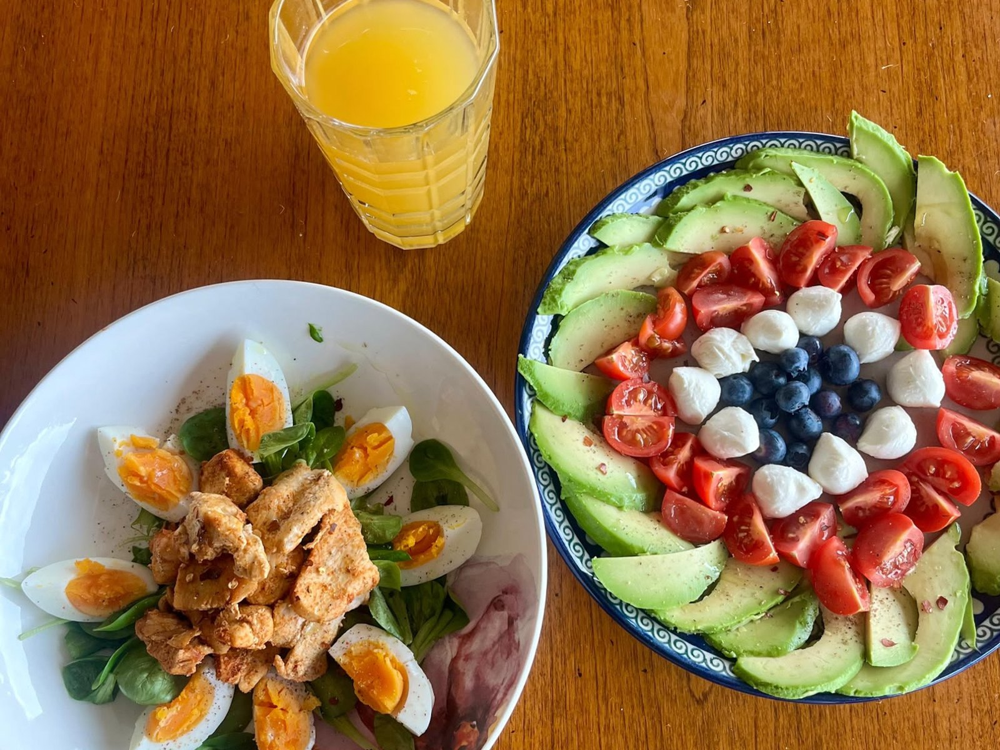
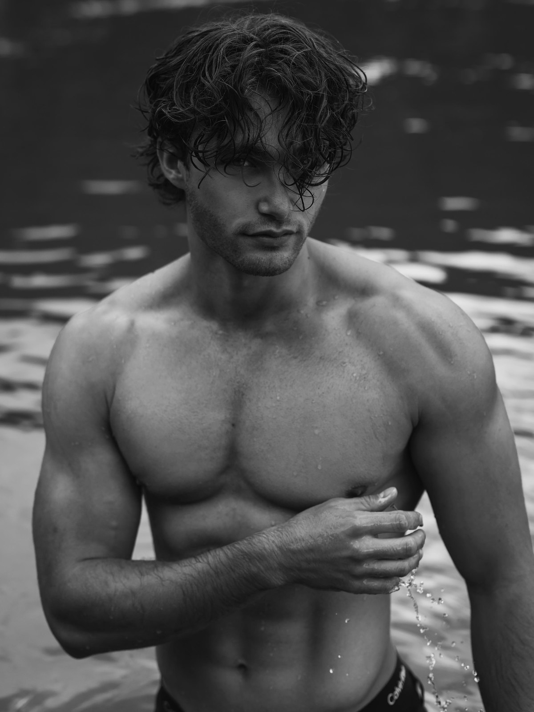

Sport & Ernährung · 2 Teile
01 · Die Anfänge von Sport und Ernährung
Schon früh war ich sportlich sehr aktiv, vor allem durch den Einfluss meines Vaters. Ich habe viele verschiedene Sportarten ausprobiert, darunter Karate, Tennis, Volleyball, etwas Leichtathletik, Breakdance, Skifahren und Freerunning. Nur zwischen etwa 14 und 16 Jahren gab es eine Phase, in der ich relativ inaktiv war.
Mit 16 durfte ich zum ersten Mal mit meinem Vater ins Gym und kam erstmals mit Krafttraining und Ernährung in Berührung. Meine Ernährung bis dahin hätte kaum schlechter sein können. Ich nahm sehr wenige Mikronährstoffe zu mir, mochte die meisten Gemüsesorten und viele andere Lebensmittel nicht und hatte nur deshalb eine relativ normale und schlanke Figur, weil ich körperlich sehr aktiv gewesen war. In dieser Zeit nahm diese Aktivität allerdings deutlich ab. Obwohl ich angefangen hatte, ins Gym zu gehen, und etwa zweimal pro Woche zwei Stunden trainierte, war das Training unregelmässig.
In dieser Zeit verschlechterte sich meine Ernährung weiter, und ich konsumierte extrem viel Zucker und Alkohol. Mit etwa 17 bis 18 begann ich langsam, mich ernsthafter mit Trainingsmethodik zu beschäftigen. Ich trainierte deutlich öfter, etwa vier- bis sechsmal pro Woche, aber meine Ernährung war weiterhin schlecht. Mir ging es damals nur darum, meine Proteinzufuhr zu erreichen; alles andere war mir grösstenteils egal. Ich trank weiterhin viel Alkohol und nahm erhebliche Mengen Zucker zu mir.
Mit etwa achtzehneinhalb nahm ich eine erste kleine Veränderung vor, vor allem weil ich inzwischen ein spürbares Mass an Übergewicht angesammelt hatte, das mich störte und sowohl meine sportliche Leistung als auch mein Sozialleben beeinträchtigte. Ich ging das zunächst an, indem ich mein Training noch weiter steigerte und beschloss, flüssige Kalorien zu streichen, besonders Softdrinks wie Cola, die ich in grossen Mengen getrunken hatte. Das Übergewicht verschwand schnell.
Ich merkte, dass mir Krafttraining und die damit verbundenen Kraftzuwächse grossen Spass machten, und begann, mich ernsthafter auf Bodybuilding zu konzentrieren. Eines war mir klar: Ich wollte Muskeln, und zwar viele. Deshalb startete ich eine extreme Bulking-Phase, die ich ziemlich lange durchzog, mit einem sehr grossen Kalorienüberschuss. Meine Ernährung war immer noch nicht optimal, enthielt aber fast keinen industriell zugesetzten Zucker. Ich formuliere das bewusst so, weil ich weiterhin viel Obst ass und Lebensmittel wie Milch konsumierte, die von Natur aus Zucker enthalten.
Entsprechend schnell nahm mein Gewicht zu. Ich ging von etwa 84 Kilogramm auf 100 Kilogramm und innerhalb eines weiteren Jahres auf rund 109 Kilogramm bei einer Grösse von 1.89 Metern. Das ist auf dem unteren Foto gut zu sehen, auf dem ich etwa 103 Kilogramm wiege und mit etwa 21 Jahren bereits sehr hohe Kraftwerte habe.

02 · Zum Profi werden (und als Mr. Healthy bekannt sein)
Auch hier gab es eine grosse Veränderung. Ein Grund war, dass ich an der Uni viel mehr Volleyball zu spielen begann und das Bewegen schwerer Gewichte im Gym nicht mehr das Hauptziel war. Viele meiner Freunde spielten Volleyball oder machten Calisthenics, und ich schloss mich ihnen an. Aus Gründen, die sich etwas schwer erklären lassen, vielleicht auch beeinflusst durch das Modeling, begann ich mich mehr auf die allgemeine Gesundheit zu konzentrieren statt auf eine rein aufs Bodybuilding ausgerichtete Ernährung mit ihren typischen «extremen» Bulks und Cuts.
Dann entdeckte ich mehrere Online-Influencer, die sich auf Vitamine und Mineralstoffe konzentrierten und mir das Konzept nährstoffdichter Lebensmittel nahebrachten. Nährstoffdichte Ernährung basiert darauf, Vollwertkost und unverarbeitete Produkte gezielt zu kombinieren, um den vollen Vitamin- und Mineralstoffbedarf des Körpers zu decken. Ich lernte zum Beispiel, dass Äpfel relativ wenig Vitamine enthalten und vor allem wegen der Ballaststoffe und der Verdauung wertvoll sind, während grüne Kiwis hervorragende Quellen für Vitamin K und Vitamin C sind und Antioxidantien liefern. Das waren Erkenntnisse, die ich vorher nie bedacht hatte. Davor hatte ich einfach sehr grosse Mengen Protein und komplexe Kohlenhydrate zu mir genommen, ohne gross auf den Rest zu achten.
Das Thema wurde für mich so interessant, dass ich eine kleine Online-Zertifizierung in Gesundheits- und Wellnesscoaching abschloss und begann, Freunde und Bekannte privat zu coachen. Bei der Arbeit hielt ich ausserdem eine längere Präsentation dazu. Ich wendete dieses Wissen konsequent im Alltag an, ohne von meinem Plan abzuweichen, und fing an, hin und wieder meine Mahlzeiten auf Social Media zu posten sowie ein paar Videos über Ernährung hochzuladen.
Mein Körper veränderte sich entsprechend. Meine Blutwerte wurden besser, meine Haut verbesserte sich, und bis heute fühle ich mich in meinem Körper wohler als je zuvor. Ausserdem entwickelte ich ein detailliertes Verständnis dafür, was viele Lebensmittel tatsächlich enthalten. Ich konnte vielen Freunden helfen und habe es schliesslich zu meiner Mission gemacht, Menschen per Coaching dabei zu unterstützen, ihre Ziele zu erreichen, sei es die Wunschfigur, bessere Gesundheit oder verwandte Ziele wie Muskelaufbau, wo ich ebenfalls acht Jahre Gym-Erfahrung mitbringe. Generell möchte ich ein Beispiel dafür sein, wie viel vom eigenen körperlichen und mentalen Zustand sich durch bewusstes Handeln beeinflussen lässt.
Auch mein Training hat sich stark verändert. Heute ist es eine Kombination aus klassischem Cardio, vor allem Seilspringen, Rudern, Joggen und Langlauf, Krafttraining mit Gewichtheben und Calisthenics sowie Ballsport und motorisch orientierten Aktivitäten wie Wandern, Volleyball und Bouldern.
Meinen Körperfettanteil halte ich leicht unterhalb dessen, was allgemein als typischer gesunder Bereich gilt. Das liegt hauptsächlich an den Anforderungen des Modelings und stellt kein Problem dar, da ich täglich weiterhin fast 100 Prozent meines Mikronährstoffbedarfs decke und bei der Arbeit wie im Sport volle Leistung bringe.
